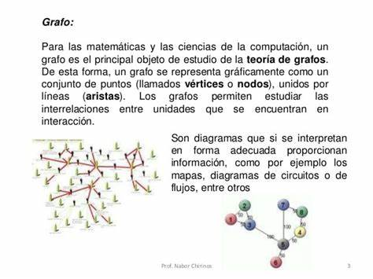
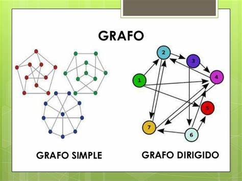
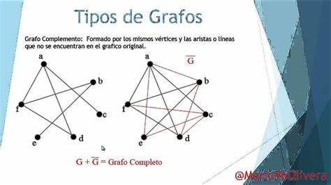

<!DOCTYPE html>
<html lang="en">
<head>
    <meta charset="UTF-8">
    <meta name="viewport" content="width=device-width, initial-scale=1.0">
    <title>Grafos</title>
</head>
<body>
    
</body>
</html>
<div>
  <p class="h6">Los grafos son estructuras de datos que representan relaciones entre diferentes entidades. En programación, se utilizan para modelar situaciones donde hay conexiones o dependencias entre elementos. Pueden ser dirigidos o no dirigidos y se componen de nodos (vértices) y aristas (conexiones).</p>
  <p class="h6">Algunas operaciones comunes en grafos incluyen la búsqueda de rutas, el recorrido (como DFS o BFS), y la determinación de ciclos. Las implementaciones pueden variar, y se utilizan en una variedad de problemas, desde redes sociales hasta algoritmos de enrutamiento.</p>
  <div class="w-25">
      
  </div>
  <p class="h6">DFS (Depth-First Search): Este algoritmo comienza en un nodo inicial y luego explora tan profundamente como sea posible a lo largo de cada rama antes de retroceder. Utiliza una pila (o recursión) para realizar este tipo de exploración en profundidad.

    BFS (Breadth-First Search): En cambio, BFS comienza en un nodo inicial y explora todos sus vecinos antes de moverse hacia los vecinos de esos nodos. Utiliza una cola para realizar este tipo de exploración en amplitud.
    
    Ambos algoritmos son útiles en diferentes contextos. DFS es útil para encontrar soluciones en estructuras de árboles y para detectar ciclos en grafos, mientras que BFS es eficaz para encontrar la ruta más corta en un grafon no ponderado y para la explaracion nivel por nivel</p>
</div>
          <h6 class="card-subtitle mb-2 text-body-secondary">Imagenes</h6>
          <div id="carouselExampleControls" class="carousel slide" data-bs-ride="carousel">
            <div class="carousel-inner">
              <div class="carousel-item active" data-bs-interval="3000">
                
              </div>

              <div class="carousel-item" data-bs-interval="3000">
                
              </div>

              <div class="carousel-item" data-bs-interval="3000">
                
              </div>

            </div>
            <button class="carousel-control-prev" type="button" data-bs-target="#carouselExampleControls" data-bs-slide="prev">
              <span class="carousel-control-prev-icon" aria-hidden="true"></span>
              <span class="visually-hidden">anterior</span>
            </button>
            <button class="carousel-control-next" type="button" data-bs-target="#carouselExampleControls" data-bs-slide="next">
              <span class="carousel-control-next-icon" aria-hidden="true"></span>
              <span class="visually-hidden">siguiente</span>
            </button>
          </div>
          <p class="card-text">En conclusión, los grafos son estructuras matemáticas poderosas que representan relaciones entre objetos. Su versatilidad los hace fundamentales en diversos campos como la informática, redes, logística y teoría de juegos. Al comprender sus propiedades y algoritmos asociados, se facilita la resolución de problemas complejos y la optimización de procesos en distintas disciplinas.</p>
          
        </div>
      </div>
  </body>
</html>